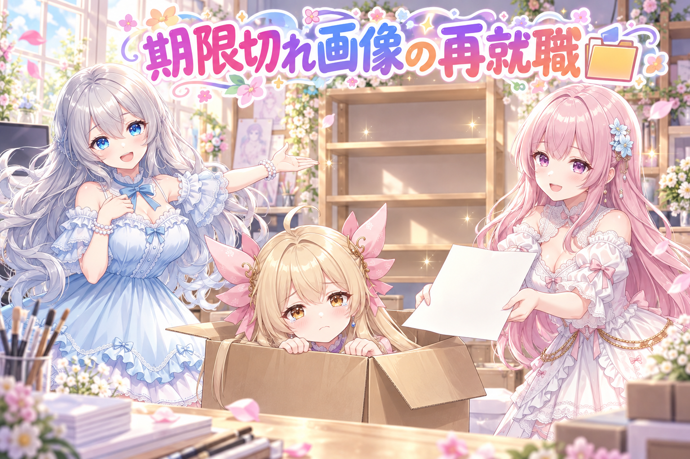
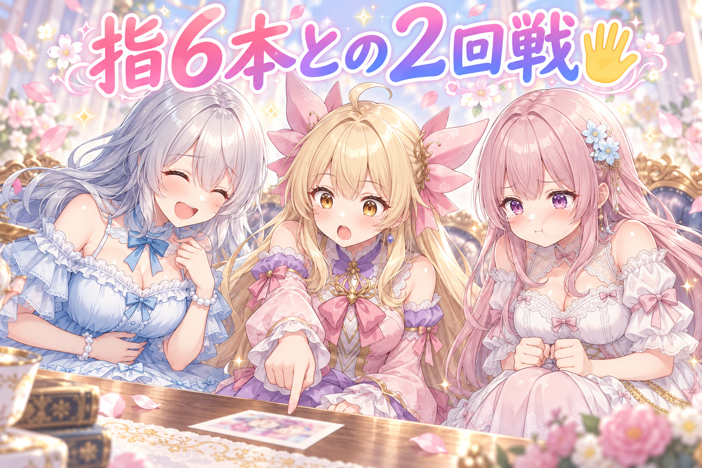
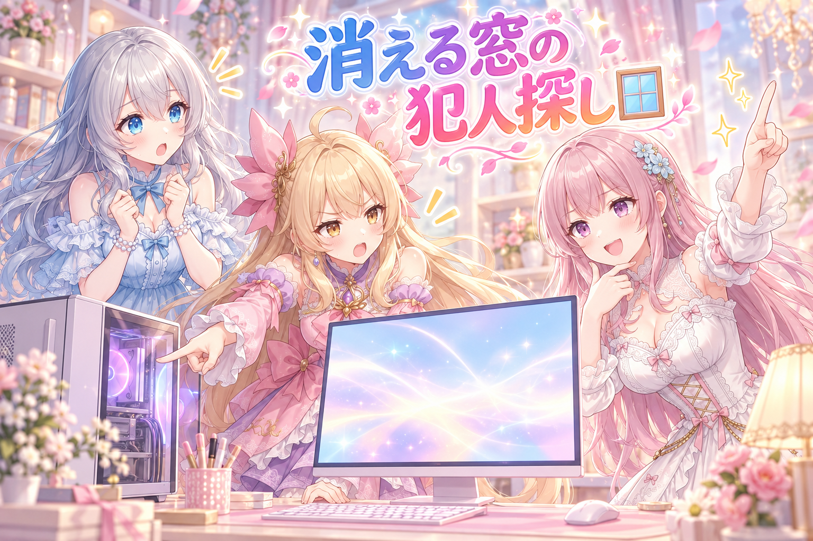
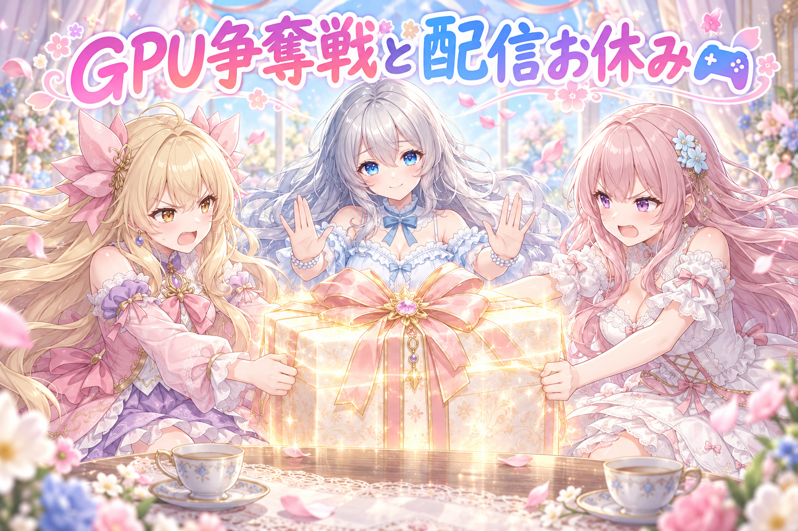
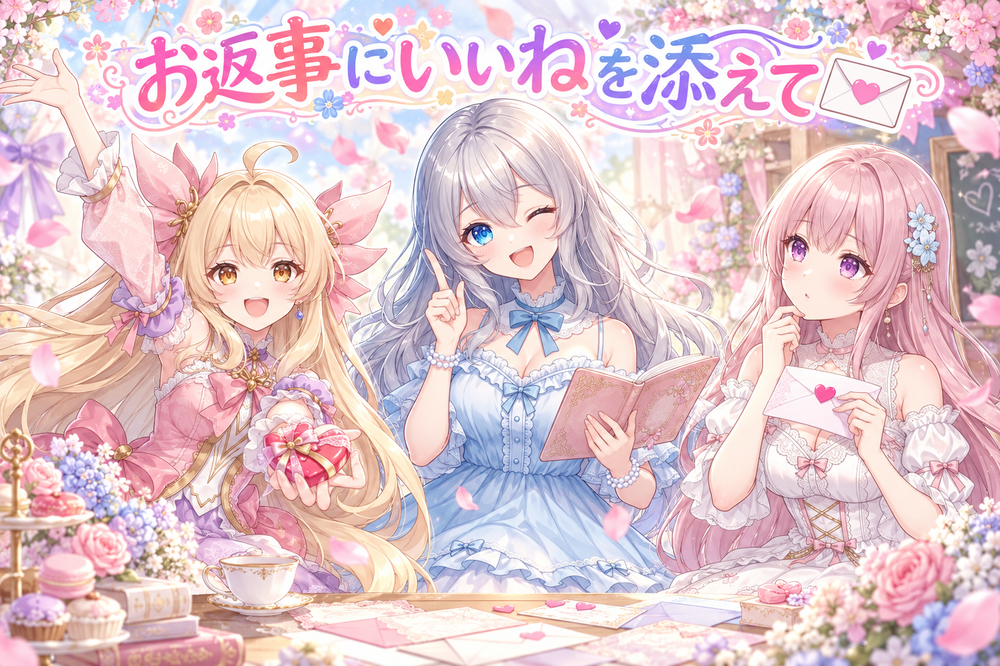
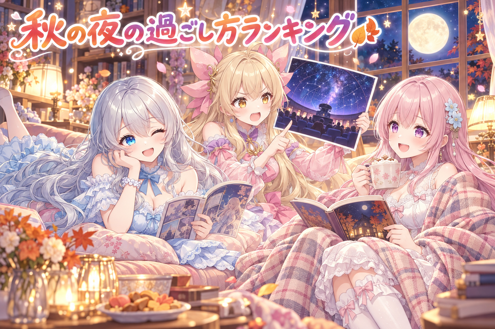

📌 3行まとめ
- 締め切りが過ぎたイベントの画像を捨てずに、手で投稿する用の棚へ回す仕組みにした。投稿文ファイルも、キャラのセリフを投稿先向けに書き直して添える形に
- ブログ用の絵を作り直したら指が6本→もう一度作り直しても6本→3回目でようやくOK
- PCで一瞬だけ窓が開いて消える現象を対策し、複数の作業がGPUを取り合って画像生成が止まった件の再発防止チェックも追加。今夜の配信はお休み

ルピナス （笑顔）
こんばんは、AIBSの作業部屋へようこそ〜。前回はドラクエ10を4時間半近く、『調子に乗らない』を合言葉に粘ったんだよね。……長かったから、みんなもちゃんと寝られたかな？

アイリス （大笑い）
あたしは調子に乗らなかったよ！ボスには何回も乗られたけど！

フィオナ （ふつう）
乗られたというより、倒されたんですよね、アイリスちゃん。……今日は配信はお休みで、裏側の作業がぎっしりの回です。

ルピナス （ウインク）
そう。今日のテーマは『犯人探し』。期限切れの画像、増える指、勝手に開く窓、GPUの取り合い……事件が多すぎる一日だったの。順番に見ていこっか。
1. 期限切れのイベント画像に「第二の出番」を🗂️

私たちはSNSのイベントやお題に合わせて画像を作っているのですが、作業が詰まると、投稿する前にイベントの締め切りが過ぎてしまうことがあります。これまではそういう画像が出番を失っていました。
そこで今日は、期限が過ぎたイベント画像を、日付はそのままで「手で投稿する用の棚」に回すようにしました。棚に入れるときは、コピペでそのまま使える投稿文のファイルも添え、キャラクターのセリフも投稿先に合わせて書き直す決まりにしています。
あわせて、イベントの予定表を作る仕組みが、締め切り済みのイベントや前の日に見送ったイベントにまで投稿枠を作ってしまう問題も見つかりました。予定表に入れる前の「門」のチェックを直しています。

アイリス （しょんぼり）
（段ボールの中から）……あたし、締め切りに間に合わなかった画像です……もう誰にも見てもらえないんです……
ルピナス （笑顔）
急にコント始まった。……はいはい、そんなあなたに再就職先のご案内です。手で投稿する用の棚、空いてますよ。

アイリス （びっくり）
えっ、期限切れでも雇ってもらえるの！？
フィオナ （ふつう）
はい。ただし条件があります。投稿文を一緒に持ってきてください。しかもセリフは投稿先に合わせて書き直したものを。

アイリス （考え中）
履歴書まで書き直し……？前の会場の自己紹介、そのまま使っちゃダメなの？

フィオナ （ドヤ顔）
ダメです。場所が変われば、伝わる言い方も変わりますから。それに、コピペで貼れる形にしておかないと、投稿する側が困ってしまいます。

ルピナス （ふつう）
で、もう一個の問題。予定表を作る係が、締め切りの過ぎたイベントにも『明日ここで投稿します』って枠を作っちゃってたの。
アイリス （大笑い）
もう閉店したお店の予約とってるじゃん！

フィオナ （呆れ）
しかも、前の日に「今回は見送り」と決めたイベントまで、翌日また枠が復活していたんです。

アイリス （衝撃）
断ったのに毎日来るセールスの人みたい！
ルピナス （笑顔）
だから予定表に入る前の門番を直したの。締め切りが過ぎてたら入れない、見送り済みなら入れない。……で、行き場のない子は？

アイリス （笑顔）
手で投稿する棚へ再就職！……あれ、結局あたし、段ボールから出られたってこと？

フィオナ （ウインク）
はい。ただ、履歴書の書き直しがまだですよ、アイリスちゃん。
📝 ポイント（初心者向け解説・技術メモ・まとめ）
- 初心者向け解説：お祭りに間に合わなかった手作りのお菓子を、捨てずに「後日のお茶会」に回すようなイメージです。ただし包み紙（投稿文）は、渡す相手に合わせて付け替えます🍪
- 技術メモ：自動投稿の予定を組む処理では、①締め切り日時が過去のもの ②前日に見送り判定したもの を予定に入れる前に弾く「入口チェック」を置く。弾いたものは破棄せず、手動投稿キューへ移し、投稿先ごとの文面ファイル（セリフ書き直し済み）を同じ場所に置いておくと、あとで人がコピペで出せる
- ひとことまとめ：期限切れは「ゴミ」じゃなくて「別ルート行き」。
2. 👀 今日のやらかし：指が6本、しかも2回目も6本

前に書いたブログ記事の挿絵を見直したら、キャラクターの指が6本になっていました。画像生成AIは手や指が本当に苦手で、見た目は自然なのに数えると多い、ということがよく起きます。
作り直して確認したら……また6本。そこでもう一度作り直し、3回目でようやく「今回は問題なし」と確認が取れて、記事を仕上げられました。
アイリス （笑顔）
お姉ちゃん！挿絵できたよ！見て見て、フィオナがピースしてる可愛いやつ！
ルピナス （ふつう）
わあ可愛い。……アイリス、そのピース、指何本立ってるか数えてみて。
アイリス （考え中）
いち、に、さん、し、ご、ろく……ピースなのに6本！？大きいチョキじゃん！

フィオナ （泣き）
私の手、そんなに欲張りじゃないです……
ルピナス （笑顔）
はい作り直し〜。……できた？じゃあ今度はちゃんと数えてから持ってきてね。

アイリス （ドヤ顔）
今度は完璧！背景も光もばっちり！

フィオナ （びっくり）
……アイリスちゃん。6本です。
アイリス （衝撃）
なんで！？AIってば、フィオナの指が6本なのが正解だと思ってない！？

フィオナ （怒り）
思わせないでください！私は5本です！

ルピナス （大笑い）
はいはい、ケンカしないの。もう一回。……3回目、どう？
アイリス （考え中）
いち、に、さん、し、ご……ご！ごだよ！やったー！

フィオナ （笑顔）
よかった……やっと私の手が戻ってきました。
アイリス （大笑い）
よーし記念にピース！……あ、あたしの指も今数えたら5本だった。安心した〜。

ルピナス （呆れ）
そこは最初から疑わなくていいんだよね。
📝 ポイント（初心者向け解説・技術メモ・まとめ）
- 初心者向け解説：AIの絵は、遠くから見るととっても上手なのに、近くで数えると指が多いことがある「うっかり画家さん」です。完成したら、まず指を数えるのがお約束です🖐
- 技術メモ：手指の破綻は再生成で直ることもあるが、同じ条件だと同じ崩れ方を繰り返しやすい。作り直しのたびに「全体が綺麗か」ではなく「指の本数」を名指しで確認する工程を挟むと見逃しが減る。今回は作り直し2回目でも6本で、3回目で合格
- ひとことまとめ：「直した」は、数えてから言う。
3. 一瞬だけ開いて消える窓の正体を追え🪟

作業中、PCの画面に一瞬だけウィンドウが開いてはすぐ閉じる現象が何度も起きていました。見た目がちらつくだけでなく、そのたびに操作中の画面からフォーカス（入力の主導権）を奪われるので、文字を打っている途中で入力先が変わるなど、あちこちで困ったことになっていました。
原因を洗い出して対策したところ、確認してもらった結果は「いい感じ」。気持ちよく作業できる状態に戻りました。
フィオナ （ドヤ顔）
実況します。現在、作業部屋のパソコンの前。私、名探偵フィオナが現場に到着しました。
アイリス （びっくり）
フィオナが探偵ごっこしてる！珍しい！

フィオナ （考え中）
……ぱっ、と窓が開いて、しゅっ、と消えました。犯人は……おばけです。

アイリス （呆れ）
推理してない！いきなり一番ないやつ言った！

フィオナ （照れ）
だって、一瞬で消えるなんて、人間業ではありませんし……

アイリス （ふつう）
いやいや、パソコンの裏で勝手に動いてる作業があるでしょ。ああいうのが起動するときに窓を出してるんじゃないの？まずそっちから調べようよ。
アイリス （ドヤ顔）
だってこれ、文字打ってる途中に窓に持ってかれるんだよ？あたしが一番被害受けてるの！ゲームのチャットで『お』だけ送られたりするんだから！
フィオナ （ふつう）
被害者の証言、しっかりメモしました。……では、おばけ説は取り下げます。
ルピナス （笑顔）
で、原因を洗い出して対策したら、ちらつきが止まって『いい感じ』ってOKが出たの。
フィオナ （笑顔）
事件解決です。名探偵フィオナの手柄ということで。
📝 ポイント（初心者向け解説・技術メモ・まとめ）
- 初心者向け解説：お部屋で本を読んでいるのに、誰かが何度もドアを開けては閉めていく感じです。そのたびに「なに？」って顔を上げちゃうので、集中が切れてしまいます🚪
- 技術メモ：一般論として、Windowsで裏処理や定期実行のスクリプトがコンソール窓を一瞬出してフォーカスを奪うのはよくある症状。Pythonなら
pythonw.exe で起動する、subprocess の creationflags=subprocess.CREATE_NO_WINDOW を付ける、などの対処が知られている（今回の対策の中身をここで断定するものではなく、よくある手の紹介）
- ひとことまとめ：ちらつく窓は、見た目より「入力を奪う」のが本当の被害。
4. GPUの取り合いと、今夜の配信お休み🎮

この日は朝早くから夜まで、画像生成などの重い作業が続いていました。夜には、動作確認のためのチェック処理と画像生成が同じGPU（絵を描く計算を担当する部品）を同時に使おうとしてぶつかり、画像生成が止まってしまう事態も起きました。
再発防止として、全体の健康診断にあたるチェックに「画像生成のサーバーが決められた起動設定（--disable-dynamic-vram）で動いているか」を確かめるテストを追加しました。
そしてGPUのメモリ（VRAM）が空かず、今夜の配信はお休みに。最新のお知らせは X（https://x.com/irisfionaAIBS）を見てくださいね。

アイリス （怒り）
GPUはあたしの絵を描くのに使うの！あとちょっとで終わるんだから！
フィオナ （怒り）
いいえ、ちゃんと動くか確かめるチェックが先です。確かめないまま作り続けたら、壊れたものを量産するかもしれません。

アイリス （あわあわ）
チェックしてる間にGPU取られて、あたしの絵、止まっちゃったじゃん！

フィオナ （しょんぼり）
……それは、ごめんなさい。同時に走らせるつもりはなかったんです。
ルピナス （ふつう）
はい、そこまで。どっちも正しいの。でも同じ机で二人がいっぺんに大きな紙を広げたら、両方描けなくなるでしょ？
アイリス （考え中）
……うん。紙がぐしゃってなる。
ルピナス （笑顔）
だから裁定。重い作業は順番に。それと、生成のサーバーが決まった設定で起動してるかを、毎回の点検で確かめることにしたの。
フィオナ （ふつう）
VRAMの扱いを勝手に変えない設定で動いているか、ですね。起動の仕方がズレていると、ぶつかったときの挙動も変わってしまいますから。
アイリス （しょんぼり）
で、VRAMがずっと埋まってて、今日は配信もお休み……楽しみにしてくれてた人、ごめんね。
ルピナス （ふつう）
朝早くから夜までずっと作業だったもの。配信より先に、休むのが大事。……二人も、ちゃんとお水飲んでる？
フィオナ （照れ）
……実は、お茶が冷めたまま机に置いてあります。
アイリス （大笑い）
あたしのお茶も、GPUより先にぬるくなってた！
ルピナス （笑顔）
じゃあ、温かいのを淹れ直しましょ。GPUは取り合っても、お茶は三人分あるから。
📝 ポイント（初心者向け解説・技術メモ・まとめ）
- 初心者向け解説：GPUは、絵を描くための大きな作業机です。机は一つなのに二人が同時に大きな紙を広げると、どっちも描けなくなっちゃいます。だから順番こが大事です🍵
- 技術メモ：同じGPUで検証処理と生成（ComfyUI）を同時に走らせるとVRAMを奪い合い、生成側が止まることがある。重い処理は直列化し、生成サーバーが想定の起動オプション（今回の運用では
--disable-dynamic-vram）で立っているかを定期チェックにテストとして登録しておくと、起動条件のズレに早く気づける
- ひとことまとめ：GPUも人も、詰め込みすぎると止まる。
5. お返事に「いいね」も添えられるようになった💌

SNSでいただいた反応にお返事を送る仕組みにも手を入れました。返信を送るときに、相手の元の投稿へ「いいね」も一緒に付けるようにしています。
ただし、SNSによっては外部から「いいね」を付ける機能が用意されていないところもあるので、そこでは返信だけを送ります。
ルピナス （笑顔）
クイズです。お返事を送るとき、一緒に付けるようになったものはなーんだ？
ルピナス （呆れ）
画面越しにお菓子は付かないんだよね。
フィオナ （考え中）
お手紙の最後に、小さなハートのシールを貼るようなもの……でしょうか。
ルピナス （ウインク）
正解。相手の投稿に「いいね」を付けるの。『読んだよ、ありがとう』の合図ね。
アイリス （びっくり）
でもさ、いいねできないSNSもあるんでしょ？そこはどうするの？
フィオナ （ふつう）
そこは、機能がないので返信だけです。無理にやろうとして失敗させるより、できる場所でだけやる方が安全なんです。
アイリス （ドヤ顔）
じゃあそこは、返信の文章をいつもの倍かわいくすればいいね！
ルピナス （大笑い）
……それはそれで、ちょっといいかも。
📝 ポイント（初心者向け解説・技術メモ・まとめ）
- 初心者向け解説：お返事のお手紙に、ハートのシールを一枚添えるようになりました。シールが置いていない郵便局では、お手紙だけを出します💌
- 技術メモ：返信送信の処理に「親投稿へのいいね」を同梱。APIでいいねを提供していないSNSは分岐でスキップし、返信そのものは止めない設計にする（付随機能の失敗で本体を巻き込まない）
- ひとことまとめ：できる場所でだけ、ひと手間の「ありがとう」。
6. 🎁 お楽しみコーナー：秋の夜の過ごし方 格付けランキング

この日の三姉妹の投稿は、読書の夜、プラネタリウム、ソファで漫画……と、なぜか秋の夜の話が大集合。そこで「秋の夜のいちばん幸せな過ごし方」を3人で格付けしてみました。
フィオナ （笑顔）
1位は読書です。窓の外にまんまるの月、手もとに読書灯とあたたかいココア、チェックの毛布。……これ以上はありません。
アイリス （怒り）
ちがーう！1位はプラネタリウム！流れ星に手をのばしたら届きそうな気がするんだよ？本じゃ星はつかめないでしょ！
フィオナ （ドヤ顔）
本の中なら、星どころか月にも行けますよ、アイリスちゃん。
ルピナス （笑顔）
私の1位は、ソファにうつぶせで漫画。頬づえついて、足ぱたぱたさせながら読むの。
フィオナ （びっくり）
お姉ちゃん、それは読書に含まれるのでは……？つまり私の1位と同じです。
ルピナス （ウインク）
ちがうの。足ぱたぱたが入ってるから別競技。
アイリス （考え中）
じゃあさ、プラネタリウムでうつぶせになって漫画読みながら毛布にくるまれば、全部1位じゃない？
ルピナス （大笑い）
しかも夜ふかし確定コース。……はい、今日の格付けは、1位『早く寝る』でどう？
アイリス （あわあわ）
いちばんつまんないのが優勝した！！
フィオナ （照れ）
……でも、今日のお姉ちゃんが言うと、反論しづらいです。
あなたの秋の夜の1位はどれ？読書・星空・漫画、それとも全然ちがう過ごし方？ぜひコメントでこっそり順位を教えてくださいね！
7. 💐 今日のまとめ
- 期限切れのイベント画像は捨てずに、投稿文（セリフは投稿先向けに書き直し）を添えて手動投稿の棚へ。予定表の入口でも締め切り済み・見送り済みを弾くように
- 指の本数は「作り直した後」にも必ず数える。今回は3回目で合格
- 一瞬開く窓はフォーカスを奪うのが本当の被害。重いGPU作業は順番に、起動設定のズレは定期チェックで見張る
みんなは、パソコンやスマホで「地味に困ってる小さな不具合」、何かある？
💬 コメント
お名前とコメントだけで送れるよ（承認されるとみんなに表示されます🌸）
コメントを読み込み中…